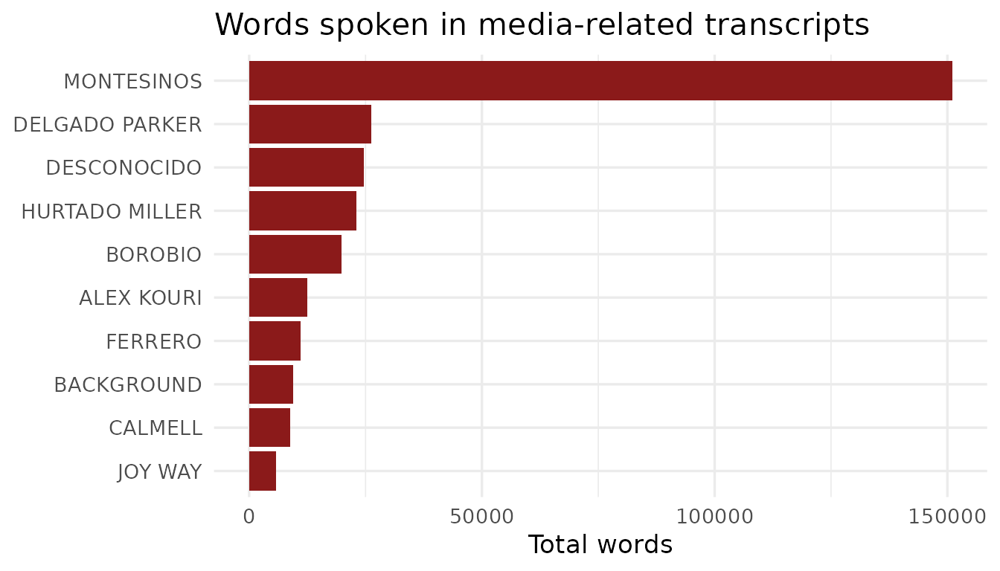

Overview
{BribeR} is an R package for accessing and analyzing the Vladivideos — a collection of secret recordings documenting Vladimiro Montesinos, Peru’s intelligence chief under President Alberto Fujimori, bribing politicians, judges, military officers, media owners, and businesspeople throughout the 1990s. The recordings were declassified and made public in 2000 and have since become a landmark dataset for the study of corruption, state capture, and authoritarian politics.
The package provides structured, machine-readable access to 101 transcripts along with metadata on speakers, topics, and institutional roles. It includes six main functions:
| Function | Description |
|---|---|
read_transcripts() |
Load the full transcript corpus, optionally filtered by ID |
get_transcript_id() |
Find transcript IDs by speaker or topic |
get_transcript_speakers() |
Get speakers associated with each transcript |
get_transcripts_raw() |
Load the raw source CSV files |
read_transcript_meta_data() |
Build a tidy metadata summary per transcript |
run_transcript_network_app() |
Launch an interactive network visualization app |
Installation
# Install from CRAN
install.packages("BribeR")
# Or install the development version from GitHub
remotes::install_github("jessietrudeau/BribeR")Loading Transcripts
The main entry point is read_transcripts(), which loads
the full corpus as a tidy data frame. Each row is one speech turn, with
columns for the transcript ID (n), speaker, speech text,
standardized speaker name, date, and topic.
library(BribeR)
transcripts <- read_transcripts()
head(transcripts)
#> # A tibble: 6 × 7
#> n row_id date speaker speech speaker_std topic
#> <dbl> <int> <chr> <chr> <chr> <chr> <chr>
#> 1 1 1 3/25/1997 BACKGROUND Declaraciones … BACKGROUND topi…
#> 2 1 2 3/25/1997 BACKGROUND [La entrevista … BACKGROUND topi…
#> 3 1 3 3/25/1997 La señora Levante su mano… ALVA topi…
#> 4 1 4 3/25/1997 El señor Javier Alva Sí. ALVA topi…
#> 5 1 5 3/25/1997 El señor Neil Lewis Señor Alva, mi … LEWIS topi…
#> 6 1 6 3/25/1997 El señor Javier Alva Javier Alva Orl… ALVA topi…You can filter to one or more transcripts by passing their numeric IDs:
t1 <- read_transcripts(transcripts = 1)
subset <- read_transcripts(transcripts = c(5, 12, 47))
nrow(t1)
#> [1] 697
nrow(subset)
#> [1] 1324Finding Transcripts by Speaker or Topic
get_transcript_id() returns transcript IDs matching any
combination of speakers and topics. Filters use OR logic: a transcript
is returned if any of the specified speakers appear in
it, or if any of the specified topics are flagged.
# All available transcript IDs
all_ids <- get_transcript_id()
length(all_ids)
#> [1] 101
# Transcripts featuring Montesinos
montesinos_ids <- get_transcript_id(speaker = "montesinos")
length(montesinos_ids)
#> [1] 88
# Transcripts about media manipulation
media_ids <- get_transcript_id(topic = "media")
length(media_ids)
#> [1] 38Available topic names include: referendum,
ecuador, lucchetti_factory,
municipal98, reelection,
miraflores, canal4, media,
promotions, ivcher, foreign,
wiese, public_officials, safety,
and state_capture.
Getting Speakers Per Transcript
get_transcript_speakers() returns a tibble with one row
per speaker and a list-column of the transcript IDs they appear in.
speakers <- get_transcript_speakers()
head(speakers)
#> # A tibble: 6 × 2
#> speaker_std transcripts
#> <chr> <list>
#> 1 ALBARRACIN <dbl [2]>
#> 2 ALBERTO KOURI <dbl [1]>
#> 3 ALEX KOURI <dbl [11]>
#> 4 ALVA <dbl [1]>
#> 5 AMERICANO <dbl [2]>
#> 6 AMOIN <dbl [1]>Each entry in the transcripts column is a numeric vector
of IDs. You can use lengths() to count appearances:
library(dplyr)
#>
#> Attaching package: 'dplyr'
#> The following objects are masked from 'package:stats':
#>
#> filter, lag
#> The following objects are masked from 'package:base':
#>
#> intersect, setdiff, setequal, union
speakers |>
mutate(n_transcripts = lengths(transcripts)) |>
arrange(desc(n_transcripts)) |>
head(10)
#> # A tibble: 10 × 3
#> speaker_std transcripts n_transcripts
#> <chr> <list> <int>
#> 1 MONTESINOS <dbl [88]> 88
#> 2 HERNANDEZ CANELO <dbl [18]> 18
#> 3 SERPA <dbl [14]> 14
#> 4 ALEX KOURI <dbl [11]> 11
#> 5 DELGADO PARKER <dbl [11]> 11
#> 6 VILLANUEVA RUESTA <dbl [11]> 11
#> 7 IBARCENA <dbl [10]> 10
#> 8 ARCE <dbl [9]> 9
#> 9 LOCUTOR <dbl [8]> 8
#> 10 MONTES DE OCA <dbl [8]> 8Transcript Metadata
read_transcript_meta_data() assembles a
one-row-per-transcript summary combining dates, speaker rosters, word
counts, and topic flags.
meta <- read_transcript_meta_data()
head(meta)
#> # A tibble: 6 × 5
#> n date speakers n_words topics
#> <dbl> <chr> <list> <int> <list>
#> 1 104 7/1/2000 <chr [2]> 9289 <chr [2]>
#> 2 19 4/21/1998 <chr [11]> 5693 <chr [2]>
#> 3 11 2/10/1998 <chr [3]> 9420 <chr [1]>
#> 4 12 2/10/1998 <chr [2]> 1283 <chr [1]>
#> 5 5 1/8/1998 <chr [5]> 9391 <chr [2]>
#> 6 7 1/15/1998 <chr [6]> 11146 <chr [3]>Loading Raw Transcripts
get_transcripts_raw() provides access to the original
source CSV files, useful when you need the unprocessed data before
compilation.
# Load transcript 3 as a data frame
t3 <- get_transcripts_raw(n = 3)
# Load multiple transcripts combined into a single tibble
combined <- get_transcripts_raw(n = c(3, 19, 47), combine = TRUE)Putting It Together
A common workflow is to identify transcripts of interest, load them, and then analyze the text. The example below finds all transcripts about media manipulation, loads them, and summarizes how much each speaker said.
library(ggplot2)
# Step 1: find relevant transcript IDs
media_ids <- get_transcript_id(topic = "media")
# Step 2: load just those transcripts
media_transcripts <- read_transcripts(transcripts = media_ids)
# Step 3: count words spoken per actor
media_transcripts |>
mutate(n_words = lengths(strsplit(speech, "\\s+"))) |>
group_by(speaker_std) |>
summarise(total_words = sum(n_words, na.rm = TRUE), .groups = "drop") |>
arrange(desc(total_words)) |>
head(10) |>
ggplot(aes(x = reorder(speaker_std, total_words), y = total_words)) +
geom_col(fill = "#8B1A1A") +
coord_flip() +
labs(
title = "Words spoken in media-related transcripts",
x = NULL,
y = "Total words"
) +
theme_minimal(base_size = 13)
Network Visualization App
run_transcript_network_app() launches an interactive
Shiny application with two network views:
- Speaker–Topic Network: connects speakers to the topics discussed in their transcripts. Node size reflects the number of transcripts a speaker appears in; color reflects institutional type.
- Speaker Co-Appearance Network: connects speakers who appear in the same transcript, with edge weight proportional to co-appearance frequency.